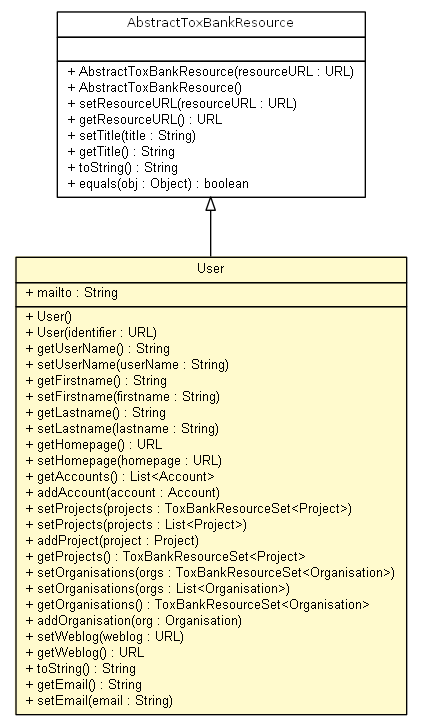

net.toxbank.client.resource
Class User

java.lang.Object
 net.toxbank.client.resource.AbstractToxBankResource
net.toxbank.client.resource.User
net.toxbank.client.resource.AbstractToxBankResource
net.toxbank.client.resource.User
- All Implemented Interfaces:
- Serializable, IToxBankResource
public class User
- extends AbstractToxBankResource
Modeled after FOAF where possible.
- Author:
- egonw
- See Also:
- Serialized Form
User
public User()
User
public User(URL identifier)
getUserName
public String getUserName()
setUserName
public void setUserName(String userName)
getFirstname
public String getFirstname()
setFirstname
public void setFirstname(String firstname)
getLastname
public String getLastname()
setLastname
public void setLastname(String lastname)
getHomepage
public URL getHomepage()
setHomepage
public void setHomepage(URL homepage)
getAccounts
public List<Account> getAccounts()
addAccount
public void addAccount(Account account)
setProjects
public void setProjects(ToxBankResourceSet<Project> projects)
setProjects
public void setProjects(List<Project> projects)
addProject
public void addProject(Project project)
getProjects
public ToxBankResourceSet<Project> getProjects()
setOrganisations
public void setOrganisations(ToxBankResourceSet<Organisation> orgs)
setOrganisations
public void setOrganisations(List<Organisation> orgs)
getOrganisations
public ToxBankResourceSet<Organisation> getOrganisations()
addOrganisation
public void addOrganisation(Organisation org)
setWeblog
public void setWeblog(URL weblog)
getWeblog
public URL getWeblog()
Copyright © 2012 ToxBank project. All Rights Reserved.